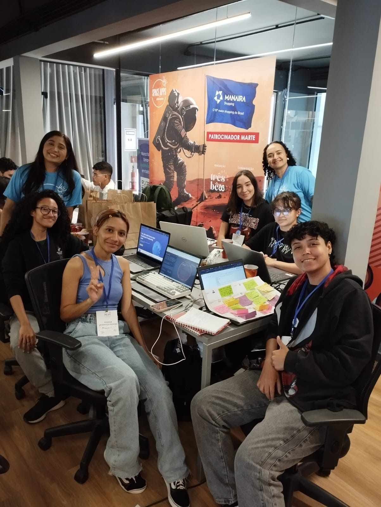

About
Visualize Space Science is a solution to NASA’s Space Apps 2024 challenge that goes by the same name.
Combining rich data visualization with engaging storytelling, this project aims to foster collaboration and insights between scientists throughout the world and of varying expertise.
The Visualize Space Science website was created by the Singularity team at the João Pessoa local event.

Would like to collaborate, give feedback or simply reach out?
Contact us at email@email.